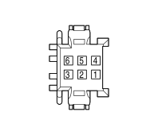

I133 LEFT SLIDING SIDE DOOR OPENING SWITCH ON COURTESY LIGHT (SUN ROOF BRIDGE)
- Path
- Electrical equipment > 3 CONNECTORS > I SWITCHES > I133 LEFT SLIDING SIDE DOOR OPENING SWITCH ON COURTESY LIGHT > I133 LEFT SLIDING SIDE DOOR OPENING SWITCH ON COURTESY LIGHT (SUN ROOF BRIDGE)
- Kind
- connector pinout (pin -> wire colour -> other end)
- Applies to
- engines: 2.0 16V JTD, 2.2 16V JTD; all production periods; only with equipment: MY 2005
- Interactive page
- https://sloeber94.github.io/elrnDB-fUlss/en/#/179010426
Applies to: engines: 2.0 16V JTD, 2.2 16V JTD; all production periods; only with equipment: MY 2005

Wiring | Colour |
|---|---|
MARRONE (brown) |
Pin | Cable | Destination | |||
|---|---|---|---|---|---|
Sec.. | Colour | Node | Connect. | Pin | |